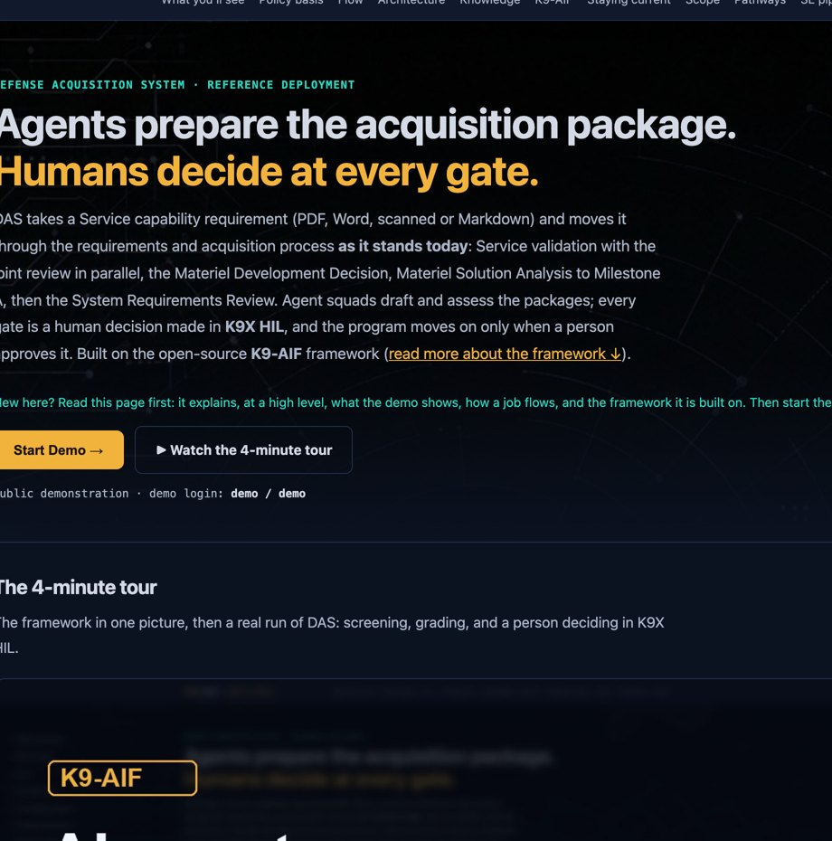

LiveFlagship
DAS: Defense Acquisition System
AI agents prepare the defense acquisition package; a person decides at every gate. A Service capability requirement goes from the sponsor's documents through Service validation, the Materiel Development Decision, Milestone A and the System Requirements Review, following the process in force today.
- A versioned process model: every stage and gate cites its policy source
- Every section screened by k9x Shield and Granite Guardian; red-team documents included
- A verdict per criterion, with the score computed in code; an independent grader from a different model family
- Every gate decided by a person in K9X HIL; undecided gates fail closed
- A sample AWS GovCloud deployment guideline